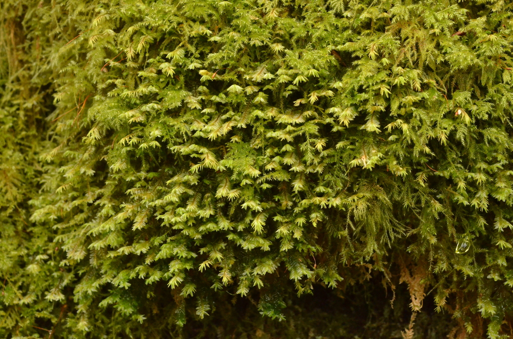

Plagiochilaceae
Notchwort Family (common name sometimes used for Plagiochila)
Plagiochilaceae is a very large family of leafy liverworts (order Jungermanniales), dominated by the huge genus Plagiochila. They are characterized by succubously inserted leaves that are often strongly asymmetric, frequently toothed or lobed, and typically longly decurrent down the stem. Underleaves are usually absent or minute, and the perianth is characteristically laterally compressed.
Overview
The Plagiochilaceae family is one of the largest families of liverworts, primarily due to the enormous genus Plagiochila, which itself contains hundreds, possibly thousands, of species. This family is cosmopolitan but reaches its highest diversity in tropical and subtropical montane regions, particularly in the Neotropics and Southeast Asia. Plants are often robust and form large patches or tufts on various substrates, including rocks, logs, soil banks, and tree trunks (epiphytic).
Members of Plagiochilaceae are leafy liverworts characterized by several distinctive features: their lateral leaves are inserted succubously and are often strongly asymmetric, with the ventral margin typically being much more arched or ampliate than the dorsal margin. The leaves are frequently armed with teeth, cilia, or lobes along their margins, and the leaf base is commonly longly decurrent, extending down the stem as a narrow wing or strip. A key diagnostic feature is the near or complete absence of underleaves in most species. When fertile, they produce a prominent perianth that is typically strongly laterally compressed (flattened from side to side), unlike the often 3-keeled perianths of the related Lophocoleaceae.
Quick Facts
- Scientific Name: Plagiochilaceae Müll.Frib. & Herzog
- Common Name: Notchwort Family (for Plagiochila)
- Number of Genera: Approx. 7-10 (dominated by Plagiochila; others include Acrochila, Plagiochilion, Chiastocaulon).
- Number of Species: Very large, potentially 500-1000+ (mostly in Plagiochila). Taxonomy is complex.
- Distribution: Cosmopolitan, but most diverse in tropical and Southern Hemisphere temperate/montane regions.
- Evolutionary Group: Bryophytes - Liverworts (Marchantiophyta) - Jungermanniopsida - Jungermanniales (often placed in suborder Lophocoleineae or Jungermanniineae).
Key Characteristics
Note: Plagiochilaceae are leafy liverworts typically with asymmetric, decurrent, succubous leaves, minute/absent underleaves, and laterally compressed perianths.
Gametophyte (Leafy Shoot) Structure
The dominant phase is the leafy gametophyte, often robust:
- Form: Typically medium-sized to large plants, forming ascending, creeping, or pendent tufts or patches. Often green, yellowish-brown, or dark brown/blackish.
- Stems: Often relatively stout, sometimes wiry.
- Leaves: Arranged in two lateral rows, often overlapping.
- Shape: Highly variable but characteristically asymmetric, with the ventral margin usually much more strongly arched or expanded than the dorsal margin. Overall shape can be ovate, oblong, rectangular, triangular, etc. Apex is typically unlobed or occasionally retuse/emarginate.
- Margins: Very frequently armed with teeth, cilia, or small lobes, especially along the ventral margin and apex. Sometimes entire.
- Insertion & Base: Distinctly succubous. The leaf base is often characteristically longly decurrent down the stem, particularly the dorsal base.
- Cells: Often roughly isodiametric, cell walls frequently thickened, especially at the corners (trigones). Oil bodies present.
- Underleaves: Critically important feature: typically completely absent, or reduced to very small, inconspicuous structures (e.g., small lobes, slime papillae) hidden among the rhizoids.
- Branching: Variable, often predominantly lateral-intercalary or terminal (Frullania-type).
- Asexual Reproduction: Gemmae are rare in this family. Fragmentation may occur.
Reproductive Structures
Species are typically dioicous.
- Antheridia: Male organs are borne in the axils of modified saccate leaves (bracts) forming intercalary spikes (androecia) along stems or branches.
- Archegonia: Female organs are terminal on main shoots or branches, surrounded by bracts (often similar to leaves but sometimes more differentiated) and a prominent perianth. The perianth is highly characteristic: typically strongly laterally compressed (flattened like an envelope), often oblong or obovate in outline, lacking distinct keels (or with only dorsal/ventral keels). The mouth is usually wide, truncate or bilabiate (two-lipped), and often toothed or ciliate like the leaves.
Sporophyte
The sporophyte develops within the perianth:
- Foot: Embedded in the stem apex tissue.
- Seta: Distinct, elongating considerably at maturity, raising the capsule well above the perianth.
- Capsule: Ovoid to cylindrical, typically dark brown or black when mature. Capsule wall is multistratose.
- Dehiscence: Capsule splits longitudinally into four straight valves upon maturity.
Spores and Elaters
Contained within the capsule.
- Spores: Small, spherical, typically finely papillose or nearly smooth.
- Elaters: Present, long and slender with 2 (sometimes 3) spiral thickenings, mixed among spores.
Field Identification
Identifying Plagiochilaceae often involves recognizing the combination of succubous, asymmetric, decurrent leaves, the lack of significant underleaves, and the laterally compressed perianth.
Primary Identification Features
- Succubous & Asymmetric Leaves: Lateral leaves overlap like upward-pointing shingles, and the ventral margin is typically much more arched/developed than the dorsal margin.
- Decurrent Leaf Base: The leaf base, especially the dorsal side, extends down the stem as a narrow strip or wing.
- Toothed/Ciliate Margins (Common): Leaf margins frequently possess teeth or cilia, particularly the ventral margin.
- Underleaves Absent or Minute: Look closely at the ventral stem surface; significant underleaves are typically lacking.
- Laterally Compressed Perianth: The perianth (if present) is flattened side-to-side, like an envelope, often with a wide, truncate mouth.
Secondary Identification Features
- Robust Habit: Many species are relatively large leafy liverworts.
- Habitat: Diverse, common on logs, rocks, soil, and as epiphytes, especially in humid forests.
- Cell Structure: Cells often with distinct trigones (requires microscope).
Seasonal Identification Tips
- Year-round: Vegetative features are key and present year-round.
- Reproductive Periods: Perianths are often large and persistent, aiding identification. Sporophytes mature seasonally.
Common Confusion Points
Plagiochila might be confused with:
- Lophocoleaceae: Share succubous leaves but typically have distinct, often bilobed underleaves, more symmetric leaves (often bilobed at apex), leaves usually not longly decurrent, and perianths that are typically 3-keeled (not laterally compressed).
- Scapaniaceae: Have complicate-bilobed leaves (folded), not the simple asymmetric leaves of Plagiochila.
- Jungermanniaceae: Often have simple, unlobed leaves, but they are usually symmetric, not decurrent, underleaves are absent/minute, and perianths are typically cylindrical or fusiform and pleated at the mouth, not strongly laterally compressed.
- Geocalycaceae: Have succubous leaves but differ in reproductive structures (ventral perianth or perigynium) and often have distinct underleaves.
Key differentiator: The combination of succubous, asymmetric, often toothed, decurrent leaves + absent/minute underleaves + laterally compressed perianth is highly characteristic of Plagiochilaceae.
Field Guide Quick Reference
Look For:
- Leafy shoots, often robust
- Leaves succubously inserted
- Leaves often asymmetric & toothed
- Leaf base often longly decurrent
- Underleaves absent or minute
- Laterally compressed perianth
Key Distinctions:
- Underleaves absent/minute (unlike Lophocoleaceae)
- Perianth laterally compressed (unlike Lophocoleaceae, Jungermanniaceae)
- Leaves simple, asymmetric (unlike Scapaniaceae's complicate-bilobed leaves)
- Leaves often decurrent (unlike many others)
Notable Examples
The vast majority of species belong to the genus Plagiochila.

Plagiochila asplenioides
(Spleenwort Notchwort)
A large, robust, and very common species in temperate Northern Hemisphere forests, often growing in extensive patches on soil, rocks, or logs. Leaves are broadly ovate/rounded, asymmetric, with finely toothed margins, and clearly decurrent. Underleaves are absent.

Plagiochila porelloides
(Lesser Notchwort)
Similar to P. asplenioides and also common in temperate Northern Hemisphere forests, often in similar habitats but sometimes drier sites. Generally smaller than P. asplenioides, with leaves often less strongly toothed or sometimes nearly entire. Distinguishing between these two can be difficult.

Plagiochila sharpii
(Sharp's Notchwort)
An example from the Neotropics (e.g., Mexico, Central America), illustrating the high diversity in tropical regions. Species identification in tropical Plagiochila often requires expert knowledge and microscopic examination due to the sheer number of species and morphological variation.

Plagiochila pectinata
(Comb Notchwort)
Found in Western Europe's oceanic regions. Known for its relatively narrow, oblong leaves with strongly toothed ventral margins, giving it a comb-like appearance. Often grows on rocks or trees.
Phylogeny and Classification
Plagiochilaceae is a major family within the Jungermanniales, forming a core part of the suborder Lophocoleineae (or Jungermanniineae, depending on classification), alongside families like Lophocoleaceae and Geocalycaceae. The genus Plagiochila itself is notoriously large and taxonomically complex, representing one of the largest evolutionary radiations among all liverworts. Molecular studies are continuously refining the understanding of relationships within Plagiochila and between Plagiochilaceae and its closest relatives.
The family is characterized by the succubous, asymmetric, often decurrent leaves, the reduction or loss of underleaves, and the evolution of the distinctive laterally compressed perianth. This combination of features defines a highly successful lineage that has diversified extensively, particularly in tropical montane environments, occupying a wide range of ecological niches from forest floors to high canopy epiphytes.
Position in Plant Phylogeny
- Kingdom: Plantae
- Division: Marchantiophyta (Liverworts)
- Class: Jungermanniopsida
- Order: Jungermanniales
- Suborder: Lophocoleineae (or Jungermanniineae)
- Family: Plagiochilaceae
Evolutionary Significance
Plagiochilaceae is significant for:
- Massive Diversification: Represents one of the most species-rich radiations among liverworts, particularly the genus Plagiochila, offering insights into processes of speciation and adaptation.
- Morphological Variation: Exhibits enormous variation in leaf shape, size, and ornamentation, making it a model group for studying morphological evolution.
- Ecological Importance: Dominant components of bryophyte communities in many ecosystems, especially tropical montane forests.
- Taxonomic Challenge: The sheer size and variability of Plagiochila pose significant challenges for taxonomy and systematics.